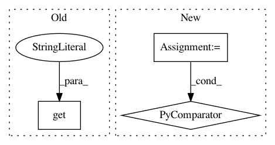

ea79dec957fe59e5f1867a98e916248bcac111f8,examples/mujoco_all_sac_real_nvp_hierarchy.py,,get_variants,#Any#,206
Before Change
env_params = ENV_PARAMS[args.env]
params = COMMON_PARAMS
params.update(env_params)
if not params.get("low_level_policy_path"):
params["low_level_policy_path"] = args.low_level_policy_path
vg = VariantGenerator()
After Change
params["low_level_policy_path"] = [
os.path.join(trained_policies_base, p)
for p in params["low_level_policy_path"]
]
vg = VariantGenerator()
In pattern: SUPERPATTERN
Frequency: 3
Non-data size: 3
Instances
Project Name: rail-berkeley/softlearning
Commit Name: ea79dec957fe59e5f1867a98e916248bcac111f8
Time: 2018-05-22
Author: kristian.hartikainen@gmail.com
File Name: examples/mujoco_all_sac_real_nvp_hierarchy.py
Class Name:
Method Name: get_variants
Project Name: rail-berkeley/softlearning
Commit Name: 74ff03f3c373703439c3ed6bada477812f25bc96
Time: 2018-08-23
Author: kristian.hartikainen@gmail.com
File Name: softlearning/replay_pools/replay_pool.py
Class Name: ReplayPool
Method Name: add_path
Project Name: rail-berkeley/softlearning
Commit Name: 39784035924760e69ec50ab6ab29c8666a595eec
Time: 2018-08-22
Author: kristian.hartikainen@gmail.com
File Name: softlearning/replay_pools/replay_pool.py
Class Name: ReplayPool
Method Name: add_path